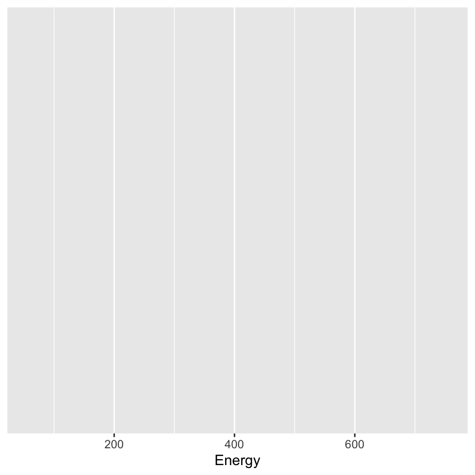
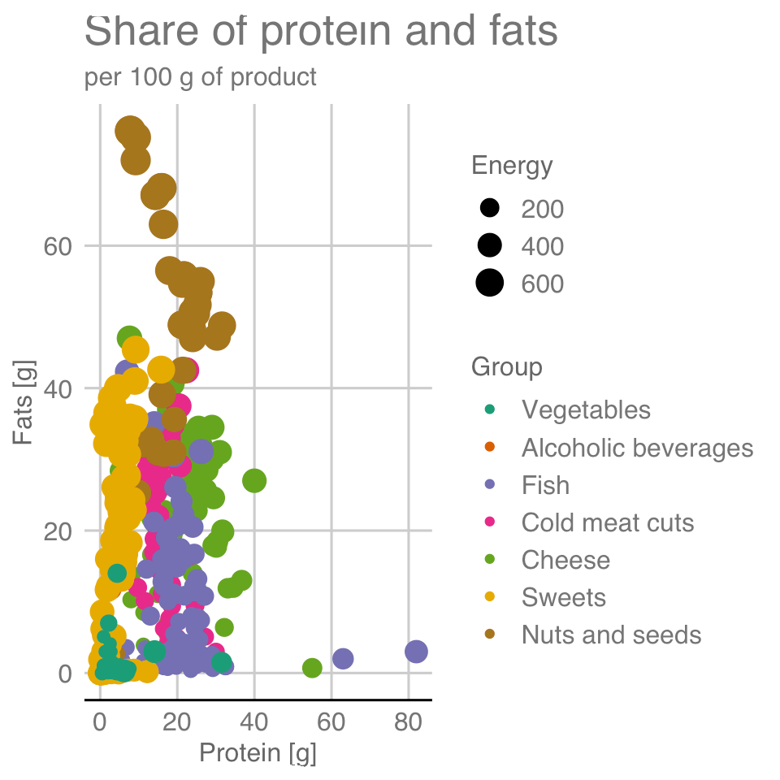
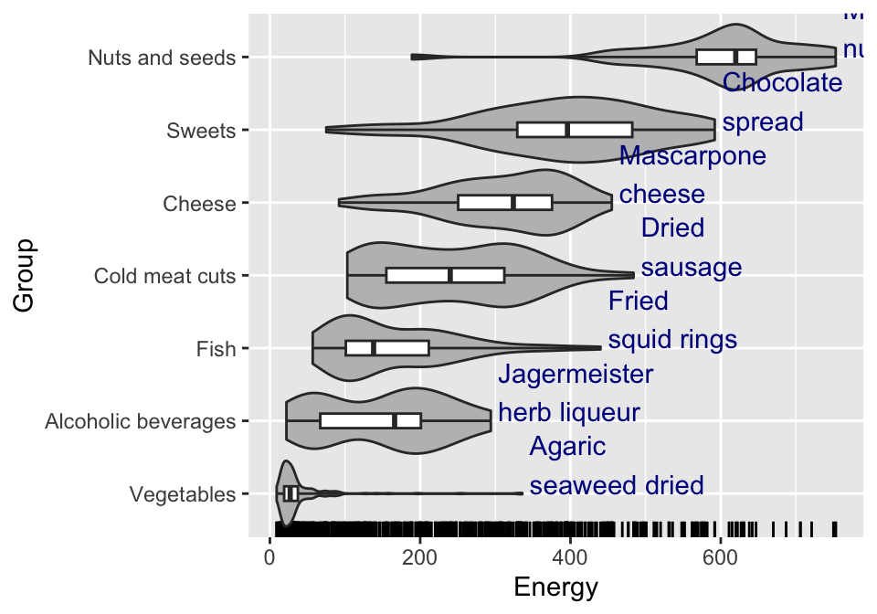

6 Code It Yourself
In this chapter we will introduce the basics of the ggplot2 package, which is an excellent tool for creating statistical charts. Why exactly this package? After all, there are so many other easy-to-use graphing tools. Among those used by professionals presenting numbers, we can distinguish three types:
- Advanced graphics programs like GIMP (a free raster graphics program), Adobe Illustrator or Inkscape (a free vector graphics program) allow you to create any chart you want. The creator’s imagination is hardly limited, and one can literally create works of art in these tools. Usually, however, polishing details requires manual modifications, a lot of skill and is difficult to automate.
- Programs like Calc (a free spreadsheet), Excel or Tableau (a dashboard building tool) allow you to quickly create charts using a set of templates. Speed is a key advantage here. The user can instantly “click” a template, indicate the columns in the data that parameterize the template. Click, click, click and yet another chart is ready.
- Programming languages and special graphing packages, such as
ggplot2for R program. Using such tools requires programming skills, so the entry threshold is higher than for the previously presented approaches. However, this has two advantages. First, once you have mastered the language, conveyor belt charting can be automated. If you create charts frequently, this automation is priceless. Second, often these tools are very flexible and allow us to build both simple and very advanced charts.
Of course, it’s worth knowing a few graphing tools to learn the pros and cons yourself. Since I create a lot of charts and care a lot about their readability and aesthetics, for me the ggplot2 package is usually the tool of first choice.
The name ggplot2 comes from the term grammar of graphics. The first version of the package was developed by Hadley Wickham. This grammar is based on the richer grammar developed by Leland Wilkinson, described in his book The Grammar of Graphics (Wilkinson 1999). The grammar presented by Wilkinson, on the other hand, is based on the results of Jacques Bertin and his work . It also draws from results in a wide variety of disciplines, from cartography, perception studies and cognitive science to linguistics, mathematics and statistics.
Using this grammar requires some training in thinking about data and relationships. But this training pays off. Once we master this grammar, we will be better able to formulate stories about data. This training in thinking will come in handy, even if we use a different programming language or other graphing libraries in the future.
6.1 Setup
In this chapter, we present instructions that allow you to reproduce the charts from the Tested Recipes chapter. In order for the commands presented below to work, you must first install the R program. It can be downloaded from https://cran.r-project.org/. Then install the statistical package ggplot2, which can be done with the install.packages("ggplot2") instruction typed into the running R program.
After installing the necessary components, enable this package with the library() command. After following these instructions, we have access to the graphical functions described below.
library("ggplot2")
library("ggthemes")Now we need data that we can represent in graphs. The ggplot2 package (like many other tools) assumes that the data is in tabular form, where variables are included in the columns and observations are included in the rows.
The examples presented in this chapter are based on the food data we have already learned about in the Recipes chapter. The data is contained in the BetaBit package and will be available in the food dataset after installing and loading this package. The data is available in English.
library("BetaBit")
head(food)After loading the graphics package and data, we are ready to create charts. Below are the relevant step-by-step instructions.
Creating a graph in the ggplot2 package is a very interactive and iterative process. In each iteration, something is added or removed to the chart and you look for the next thing to improve. This allows for a gradual improvement of the chart and builds valuable habits of systematic data mining, which are so useful when working with data. Below, alongside the following instructions, we show what the chart looks like at a given stage.
6.2 Histogram - step by step
Our first graph will be a histogram showing the distribution of energy values for the products available in the dataset.
Step 1 – Data and axes.

The creation of each graph begins by specifying what data it is based on and which variables from that data will be represented on the axes. In this case, we will be working on the food dataset and we are interested in the distribution of values of the Energia variable
We create the backbone of the chart with the following command:
ggplot(data = food, aes(x = Energia))Step 2 – Histogram.
The types of graphical representations of data in the ggplot2 package are called geometries. There are many of them available, corresponding to functions with names starting with the prefix geom_. In this case, the geom_histogram() geometry draws a histogram for a predefined variable.
The syntax of the ggplot2 package assumes adding more elements to the skeleton of the graph. Hence, a graph with histogram geometry is constructed with the following command:
ggplot(data = food, aes(x = Energia)) +
geom_histogram(color = "white")Step 3 – Small multiples.
One way to compare the distribution of a variable between groups is to use the small multiples technique. The data are presented on a grid of graphs with the same axes, but representing subsets of observations. This makes it easier to see the similarities and differences between the groups.
In the ggplot2 package, this effect can be achieved by adding the facet_wrap command and indicating which variable is used for grouping.
The visualization presented in the margin makes it quick to see that the energy value of fish is, on average, lower than products from the meat, sweets or nuts group.
ggplot(data = food, aes(x = Energia)) +
geom_histogram(color = "white") +
facet_wrap(~Grupa)Step 4 – Graphic Theme.
We already have the main content on the chart, it’s time for visual polishing. The ggplot2 package is highly customizable, you can control virtually every detail of the chart. The theme() function is used for this.
However, since the world does not end with one chart, we want to generate hundreds of visually similar charts, so when working on details, one often chooses one of the predefined graphical themes, also called skins. Theme names begin with the prefix theme_. Below we will add a graphical theme reminiscent of charts from “The Economist” newspaper.
ggplot(data = food, aes(x = Energia)) +
geom_histogram(color = "white") +
facet_wrap(~Grupa) +
theme_economist()Step 5 – Title and axis labels.
Every chart obligatorily needs clear descriptions of the axes, title and subtitle. Without them, we run the risk that the reader will not understand what is shown on the chart. To specify these graphical elements, we can use the labs() function.
ggplot(data = food, aes(x = Energia)) +
geom_histogram(color = "white") +
facet_wrap(~Grupa) +
labs(title = "Wartość energetyczna produktów",
subtitle = "na 100 g produktu",
x = "Wartość energetyczna", y = "Liczba") +
theme_economist()6.3 Themes and skins
On the chart, in addition to elements representing data, there are also very important elements unrelated to data. For example: the background, the typeface title or the size of the labels on the axes.
ggplot2 package. The theme name is in the chart title6.4 Scatterplot - step by step
Let’s look at two nutrients of our products – the amount of protein and fats.
Step 1 – Data and axes.
Each graph starts with data. We again use the ggplot() function to build the skeleton of the graph. We again use the food data. We will plot the amount of protein on the X axis and the amount of fat in 100 g of product on the Y axis.
ggplot(data = food, aes(x = Białko, y = Tłuszcze)) Step 2 – Scatterplot.

Now comes the time to choose a geometry. To draw a dot plot, we will use the geom_point() geometry. The coordinates of the points are determined by the first two variables indicated earlier by the aes() function.
Of course, the total protein and fat content cannot be more than 100%. Among the products, we see some that have very little of either component, and some that have one of these components within the range of 15-35%. The chart also allows us to see that there are several products with extremely high protein or fat content.
ggplot(data = food, aes(x = Białko, y = Tłuszcze)) +
geom_point() Step 3 – Mapping of color, size and other attributes.
Grupa, and the size of the point represents the variable EnergiaThe ggplot2 package allows you to create charts in a declarative way. If we want the chart to color code some variable, such as a group of food products, it is enough to mark such a mapping in the mapping declaration. We don’t need to say what this mapping should look like, what and how many colors to use, this will be taken care of by the ggplot2 package itself. All we need to do is in the mappings block in the aes() function to indicate which variable determines which attribute.
In the following example, we request that the Grupa variable be indicated on the graph by the color of the points, and the Energy variable by the size of the points. Note that a legend for these two characteristics will automatically appear on the graph.
ggplot(data = food, aes(x = Białko, y = Tłuszcze,
color = Grupa, size = Energia)) +
geom_point() Step 4 – Controling the mappings.
But what if we don’t like the proposed mapping? We would like a different color scheme or a different range of point sizes. We have complete control over each mapping through functions that set the scales of the graph. Such functions have a name starting with the prefix scale_, then there is the name of the graph attribute, and the third part specifies how this attribute is to be constructed.
For example, if we wanted to change the way we specify the color scale so that we use ColorBrewer colors, we can use the scale_color_brewer() function to do so. All we need to do is specify what color palette we want to use in the chart.
ggplot(data = food, aes(x = Białko, y = Tłuszcze,
color = Grupa, size = Energia)) +
geom_point() +
scale_color_brewer(type = "qual", palette = "Dark2") Step 5 – Title, axes labels and theme

We have the main content – it’s time for graphical details, chart skins, axis titles, main title and subtitle. Below we use the functions that have already appeared when discussing the histogram. However, it is important to always supplement the chart with the appropriate annotations, without this it may not be readable by the viewer.
ggplot(data = food, aes(x = Białko, y = Tłuszcze,
color = Grupa, size = Energia)) +
geom_point() +
scale_color_brewer(type = "qual", palette = "Dark2") +
labs(title = "Udział białka i tłuszczów", subtitle = "na 100 g produktu",
y = "Tłuszcze [g]", x = "Białko [g]") +
theme_gdocs() 6.5 Mappings of the variables
The key concept behind the philosophy of the ggplot2 package is the declarative definition of what variables should be represented on the chart and what role they should play. These declarations appear inside the aes() (aesthetics) function.
After declaring what the variable should do on the chart, the ggplot2 package will automatically take care of converting the value of the variable into coordinates of points on the chart. The chart below illustrates the mapping concept with an example of four variables for a dot plot.
6.6 Scales for the mappings
Typically, scales are created automatically, but there are situations where you want to turn off autopilot and take control of how the data is transformed into your own hands. The ggplot2 package allows you to specify the encoding of each graphical attribute. Scales are defined globally for the entire graph and are applied to all layers uniformly.
One of the most commonly changed scales is the color scale. It is changed not because the default colors are bad, but often because we want to increase readability for people with color vision dysfunctions, or we have our own individual preferences in this regard.
ggplot2 package, we need to specify two elements. First, how many different values we have to encode. Second, what kind of variable we are working with: whether it is an ordered scale, a scale with a neutral element, or a qualitative scale. The figure shows the colors proposed by Cynthia Brewer to represent the eight colors for qualitative variables (first column) and quantitative variables with or without a neutral element (next two columns). The palette can be selected by name (e.g., Dark2) or by number (e.g., 7)Another very interesting attribute besides color is the size of the dot. It allows you to encode continuous variables – the larger the value of a variable, the larger the dot.
For qualitative variables, an interesting option to code their values is to use shapes. The default shape scale includes basic geometric figures, hollow and filled triangles, squares and circles. An alternative to geometric shapes is to use consecutive letters of the alphabet. An interesting discussion of the pros and cons of various shapes is posted in the article Points of view: Plotting symbols (Krzywinski and Wong 2013). We also recommend the other articles in the Points of view article series.
6.7 Boxplot - step by step
Let’s see how to construct a boxplot. And by the way, we will also see how to enrich such a plot with several additional layers representing complementary perspectives.
Step 1 – Data and axes.
Following the pattern of previous plots, we also start this one by determining what data will be used to prepare the chart, here food, and what variables should be on the axes – here we want to show the energy content of products by food groups, both variables go to the aes() function.
ggplot(data = food, aes(x = Grupa, y = Energia)) Step 2 – Boxplot.
It’s time to choose a geometry. For a boxplot it is geom_boxplot(). Most geometries allow you to specify additional arguments. Here, we set the width of the box plot, smaller than the default (this will come in handy later), and mark which observations are to be treated as outliers. The coef parameter is used for this, setting it to 100 means that outliers will not be identified, and the graph whiskers will span from the minimum to the maximum value in a given group.
ggplot(data = food, aes(x = Grupa, y = Energia)) +
geom_boxplot(width = 0.2, coef = 100) Step 3 – Plot rotation.
By default, boxplots are drawn vertically (just like a histogram or bar plot). But this solution has several disadvantages. One is that the full names of the presented values may not fit on the x-axis of the chart. Another is that the plot has more resolution in the horizontal axis than in the vertical axis.
Functions that control the plot’s axes have names that begin with the prefix coord_. For example, coord_flip() swaps the axes of the graph.
ggplot(data = food, aes(x = Grupa, y = Energia)) +
geom_boxplot(width = 0.2, coef = 100) +
coord_flip()Step 4 – More layers with data.
We can have any number of layers with different geometries on the plot. Combining geometries in this way is a powerful mechanism to complement different aspects of the data.
We have written before about how box plots don’t show multimodal distributions well, so we’ll add a second layer with violin plots (i.e. geom_violin()) to this chart. This will allow us to read both the quartiles and the modes of the distribution. In addition, we will add markers on the bottom axis to indicate where each observation is, using the geom_rug() geometry.
ggplot(data = food, aes(x = Grupa, y = Energia)) +
geom_rug(sides = "l") +
geom_violin(scale = "width", fill = "grey") +
geom_boxplot(width = 0.2, coef = 100) +
coord_flip()Step 5 – Layer with descriptions.

The plot already has three layers, but there is still room to add additional useful information. So let’s add the names of the products with the highest calories. We will add the names with the geometry for captions, namely geom_text(). Below is an example of how to use this geometry.
In each geometry, you can specify local data with the data= argument. By default, geometries take the data indicated in the ggplot function, but you can also specify data for each layer separately.
ggplot(data = food, aes(x = Grupa, y = Energia)) +
geom_rug(sides = "l") +
geom_violin(scale = "width", fill = "grey") +
geom_text(data = food_max, aes(label = Nazwa),
hjust = 0, vjust = 0, color = "blue4") +
geom_boxplot(width = 0.2, coef = 100) +
coord_flip()The food_max dataset should be prepared in advance. To shorten this example we have placed the ready-made dataset in the BetaBit package.
Step 6 – Title, axes labels and theme.
We have the main content, it’s time to define the graphic details, the plot theme, the axis titles and the main title and subtitle. Below we use the functions that have already appeared when discussing the histogram. However, it is important to always supplement the chart with the appropriate annotations, without this it may not be readable by the viewer.
ggplot(data = food, aes(x = Grupa, y = Energia)) +
geom_rug(sides = "l") +
geom_violin(scale = "width", aes(fill = Grupa)) +
geom_text(data = food_max, aes(label = Nazwa),
hjust = 0, vjust = 0, color = "blue4") +
geom_boxplot(width = 0.2, coef = 100) +
coord_flip() +
labs(title = "Rozkład wartości energetycznej", subtitle = "na 100 g") +
theme_gdocs() + theme(legend.position = "none")6.8 Layers
As we have seen in the example of the boxplot, a unique capability of the ggplot2 package is to assemble together on a single chart different layers presenting different aspects of the same data. Typically, these layers represent the data in varying detail. Each layer consists of a single geometry defined by the geom_ function, but we can simply add geometries to each other.
6.9 Reproducibility
An important advantage of the ggplot2 package is the reproducibility of the plot generation process. Plots are the result of a sequence of instructions in a programming language. If, after 10 years, we want to reproduce a plot from a given sequence, nothing simpler, just copy a given piece of code to the R program console. The plots are not “clicked” in one tool or another. We get a record of the plot, which can be reproduced or modified at any time.
Reproducibility of results, and therefore of plots, is the foundation of scientific publications, but also of any decent report. If we see a graph with interesting relationships in a report or publication, isn’t it natural to expect that the chart in question can be reproduced?
6.10 Tasks
The best way to develop programming skills in the ggplot2 package is to ask questions to the data and then learn how to make a plot that answers the question. Below you will find suggestions for a few questions to warm up.
- Plot a histogram of the amount of water in different products. Mark a group of products with a color. Scale the bars for successive ranges to make it easier to see the proportion of a certain group in products with a given water content.
- Select sweets from the data and mark them on the scatter plot, showing the sugar content and the fat content. Which products deviate most from the central point cloud? Mark the names of the few outliers on the plot.
- Use a boxplot to compare the sugars content, and another to compare the fats content, between different groups of products.
If you would like to learn more about the grammar of data visualization, you may be interested in the essay Gramatyka języka wizualizacji danych from the book Odkrywać! Ujawniać! Objaśniać! (Biecek 2016) (only available in Polish).
Those who would like to learn more deeply about the program and the ggplot2 package can find a lot of detailed information in the book ggplot2: elegant graphics for data analysis (Wickham 2009). In Polish, more information about the program and the ggplot2 package can be found in the book Przewodnik po pakiecie R (Biecek 2014). Similar graphing rules for the Julia language are implemented in the Gadfly package, and for the Python language in the matplotlib package.